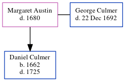

Margaret Culmer (née Austin) - 1680
[ Home ] | [ Calendar ] | [ Surnames Index ] | [ Census Index ] | [ Family History ]Margaret Austin was the 9 times great-grandmother of Nigel Horne and married George Culmer (with whom she had 1 child, Daniel) in Stourmouth, Kent, England on Jun 5, 16382.
During her life, she was living in Kent3.
She died in 1680 in Kent1 and was buried in Stourmouth on Dec 7, 16801.
Children
- Daniel was born in 1662
Citations
- Kent, England, Tyler Index to Parish Registers, 1538-1874 Online publication - Provo, UT, USA: Ancestry.com Operations, Inc., 2010. This collection was indexed by Ancestry World Archives Project contributors.Original data - Frank Watt Tyler. The Tyler Collection. Canterbury, Kent, England: The Institute of Herald
- England, Select Marriages, 1538–1973 Ancestry.com Operations, Inc.
- England, Select Marriages, 1538–1973 Ancestry.com Operations, Inc.
Family Tree
Generated by ged2site. Last updated on Jun 11, 2024